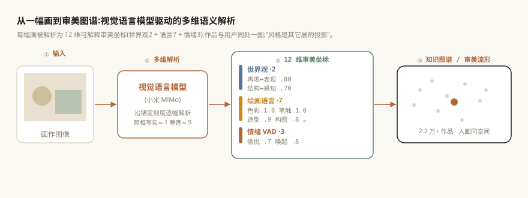
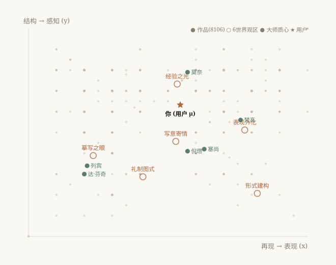

目的 绘画图像的自动理解多停留在风格分类与属性预测,缺乏可解释、可计算的多维审美表示;现有艺术知识图谱(如 ArtGraph、WuMKG)又多采用编目型本体(艺术家/画派/题材/印章),难以支撑个性化审美计算。本文构建一个由视觉语言模型驱动、人与作品共处同一空间的多维审美知识图谱。
方法 定义三个可观测层——世界观(再现↔表现、结构↔感知,2 维)、绘画语言(构图/空间/造型/光影/色彩/笔触/边缘,7 维)、情绪 VAD(愉悦/唤起/控制,3 维)共 12 维审美坐标;以视觉语言模型(小米 MiMo)沿锚定刻度对 2.2 万余幅中西名画逐幅解析入库;以「风格是其它层的投影」组织本体,并把用户行为以掩码加权质心嵌入同一 12 维空间,使人与大师可直接度量。
结果 解析覆盖率:世界观 89%、情绪 ~100%、绘画语言 ~100%;12 轴平均绝对相关仅 0.17(最大 0.51),特征值参与比给出有效维数 ≈ 8/12,空间远非退化;真实读画实例显示解析细致且可溯据(每维附中文证据短语);下游审美推荐实验初步验证该表示的有效性。FILL:可补人工一致性
结论 本文提出从「编目图谱」到「审美图谱」的范式,为绘画图像的可解释理解与个性化审美应用提供了一个可计算、可扩展、中西并蓄的知识基座。
对绘画图像的计算理解,长期以"是什么"为目标——识别风格、画派、年代、作者等离散属性。然而打动观者的,常是难以用单一标签概括的审美质地:它在"忠实再现"与"主观表现"之间的位置、笔触与色彩的语言、唤起的情绪。要支撑"懂审美"的应用(个性化推荐、策展、生成),需要一种可解释、可度量、连续的审美表示,而非又一组分类标签。
与此同时,艺术领域的知识图谱(ArtGraph[4]、WuMKG[5]、面向遗产管理的图谱[6])多构建于编目型本体:节点是艺术家、画派、题材、印章、年代,服务检索、分类与问答。这类图谱回答"这是谁画的、属于哪派",却不回答"它在审美空间里落在哪、与你有多近"。
本文的核心主张是:把绘画图像理解为一组可解释的多维审美坐标,并以"风格是其它层的投影"组织成一个人与作品共享的知识图谱。 贡献有三:
(1) 审美本体:提出绘画的三可观测层(世界观 2 维 / 语言 7 维 / 情绪 3 维)共 12 维坐标,以及"风格即投影"的组织方式(§2);
(2) VLM 驱动的大规模构建:用视觉语言模型沿锚定刻度对 2.2 万余幅中西名画逐幅解析,并将用户嵌入同一空间(§3);
(3) 量化与诚实校验:报告覆盖率、维度相关性与有效维数,并区分"断言"与"测量"(§4)。
艺术图像理解与计算美学。 早期工作预测图像审美质量[7]或识别风格[8];ArtEmis[9] 收集 45.5 万条对艺术的情绪标注,启发了我们的情绪层。这些工作或给单一"美/不美"分,或做风格分类,缺少可解释的多轴审美坐标。
艺术与文化遗产知识图谱。 Castellano 等构建 ArtGraph(基于 WikiArt 与 DBpedia)并把图谱嵌入注入深度模型以提升属性分类[4];WuMKG[5] 构建吴门书画多模态图谱(本体、印章/题材抽取、跨模态检索/问答);Huang 等[6]、CICHMKG 等面向遗产管理与非遗。它们均为编目/检索型本体。本文与之互补:以审美轴为本体、以个性化审美计算为目标,并让用户进入图谱。
视觉语言模型读画。 多模态大模型使逐幅、细粒度地"读"出画面语义成为可能。我们将其用作审美坐标测量器:不产出自由描述,而是沿固定锚定刻度输出结构化的 12 维数值 + 中文证据。
我们用三层、共 12 维刻画一幅画(图 1):
世界观(2 维)。 x = 再现→表现(越忠实摹写越小,越主观变形/抽象越大);y = 结构→感知(越重秩序/几何越小,越重气氛/光色/瞬间越大)。二者张成低维"挂载平面",其它层投影其上。
绘画语言(7 维)。 构图、空间、造型、光影、色彩、笔触、边缘,各为 0–1 连续轴。
情绪(3 维)。 愉悦、唤起、控制(VAD)。
本体的关键命题是「风格是其它层的投影」:风格不是独立标签,而是世界观×语言×情绪的可计算合成。由此自然导出原型谱系——6 个世界观区 × 8 个二元亚型 = 48 种审美原型,作为连续空间上一层可读的索引。两点间审美距离定义为子空间加权:

语料为中西名画共 2.2 万余幅(含倪瓒、八大山人、沈周等中国书画与莫奈、梵高、德拉克洛瓦等西方名作),覆盖 300 余位艺术家。每幅图像送入视觉语言模型(小米 MiMo),系统提示给出每条轴的锚定刻度标杆(如再现轴:照相写实 ≈ 0.10、印象派外光 ≈ 0.55、近抽象 ≈ 0.92),要求模型先描述画面特征、再对照标杆打分,并对每维给出一句中文证据,最后输出结构化 JSON 入库。
表 1 · 视觉语言模型对若干名画的多维解析(节选,真实输出)
| 作品 / 作者 | 世界观 x,y(区) | 愉悦 / 唤起 | 语言层证据(节选) |
|---|---|---|---|
| 《橄榄树》 梵高 | .80, .70 (WV5) | .70 / .80 | 色彩 1.0「互补色对比,橙黄与绿创造张力」· 笔触 1.0「厚涂、明显肌理传达动感」 |
| 《睡莲》 莫奈 | .60, .70 (WV4) | .80 / .60 | 笔触 1.0「短促、分离、方向多变」· 空间 .40「俯视压平纵深,近装饰平面」 |
| 《基督受难》 德拉克洛瓦 | .70, .60 (WV5) | .30 / .80 | 光影 .9「强烈明暗对比 chiaroscuro」· 构图 .8「垂直、十字架主导」 |
实例显示:解析不仅给出数值,且每维可溯据(中文证据短语),便于人工核验与可解释展示。
作品的 12 维向量、谱系关系、媒材/作者等存入图谱。用户也进入同一空间:由其交互行为(收藏/心动/停留/跳过,带事件权重)求掩码加权质心 μ,与作品、艺术家质心同维,从而"本命画家 = 最近的大师节点"。
覆盖率。 2.2 万余幅入选作品中,世界观坐标覆盖 89%、情绪 VAD ~100%、绘画语言 ~100%。
维度相关性与有效维数。 在全语料上,12 轴平均绝对相关仅 0.17(最大 0.51);相关矩阵特征值参与比给出有效维数 ≈ 8/12,8 个主成分含 90% 方差。最相关的三对(空间↔光影 r=.51、构图↔造型 r=.49、再现↔唤起 r=.49)直觉合理——提示部分轴可在未来合并,但空间远非退化,12 维确实承载了多于 8 个自由度的可分信息。
断言 vs 测量(诚实性)。 我们区分两类量化内容:由 VLM 逐图测量得到的坐标(可核验、可证伪),与由风格散文派生/断言的指纹(待校准)。图谱明确标注二者,并以真实作品分布去校准断言——这一"可证伪"的工程立场是本图谱区别于纯断言型知识库之处。FILL:可补 VLM 与人工标注子集一致性 r

共享的审美流形直接支撑下游应用:(1) 审美推荐——以"熟悉↔惊喜"混合在 12 维空间中排序,既能"更像你已爱的",也能找"落在惊奇带上的新鲜画";(2) 人画对照——本命画家、48 原型画像;(3) 画廊/策展——沿审美轴组织动线。我们用留一法在真实交互上做了初步离线评估(详见FILL:引英文姊妹篇/附录),验证该 12 维表示可支撑有意义的个性化排序。
本文提出并实现了一个视觉语言模型驱动、人画共享的多维审美知识图谱:以三可观测层(世界观/语言/情绪)共 12 维刻画绘画,以"风格即投影"组织本体,对 2.2 万余幅中西名画逐幅解析入库,并诚实报告覆盖率、相关性与有效维数。它把艺术图谱从"编目"推进到"审美",为绘画图像的可解释理解与个性化应用提供基座。未来工作:维度去相关与本体精简(有效维数 ≈8)、向量的不确定性建模、VLM–人工一致性验证、以及更大规模的跨文化扩展。
图表:图 1 读画管线 · 图 2 审美流形 · 表 1 真实读画实例。复现:解析管线与统计脚本随图谱切片开源。
[4] Castellano G, Sansaro G, Vessio G. Integrating Contextual Knowledge to Visual Features for Fine Art Classification. DL4KG, 2021; ext. Knowledge-Based Systems, 2022.
[5] Wan J, Zhang H, Zou J, et al. WuMKG: a Chinese painting and calligraphy multimodal knowledge graph. Heritage Science, 12:159, 2024.
[6] Huang Y, Yu S, Chu J, Fan H, Du B. Using knowledge graphs and deep learning algorithms to enhance digital cultural heritage management. Heritage Science, 11:204, 2023.
[7] Datta R, et al. Studying Aesthetics in Photographic Images Using a Computational Approach. ECCV, 2006.
[8] Karayev S, et al. Recognizing Image Style. BMVC, 2014.
[9] Achlioptas P, Ovsjanikov M, Haydarov K, Elhoseiny M, Guibas L. ArtEmis: Affective Language for Visual Art. CVPR, 2021.
FILL 补:Berlyne 倒U、serendipity 度量、国内 KG/数字人文相关工作若干。